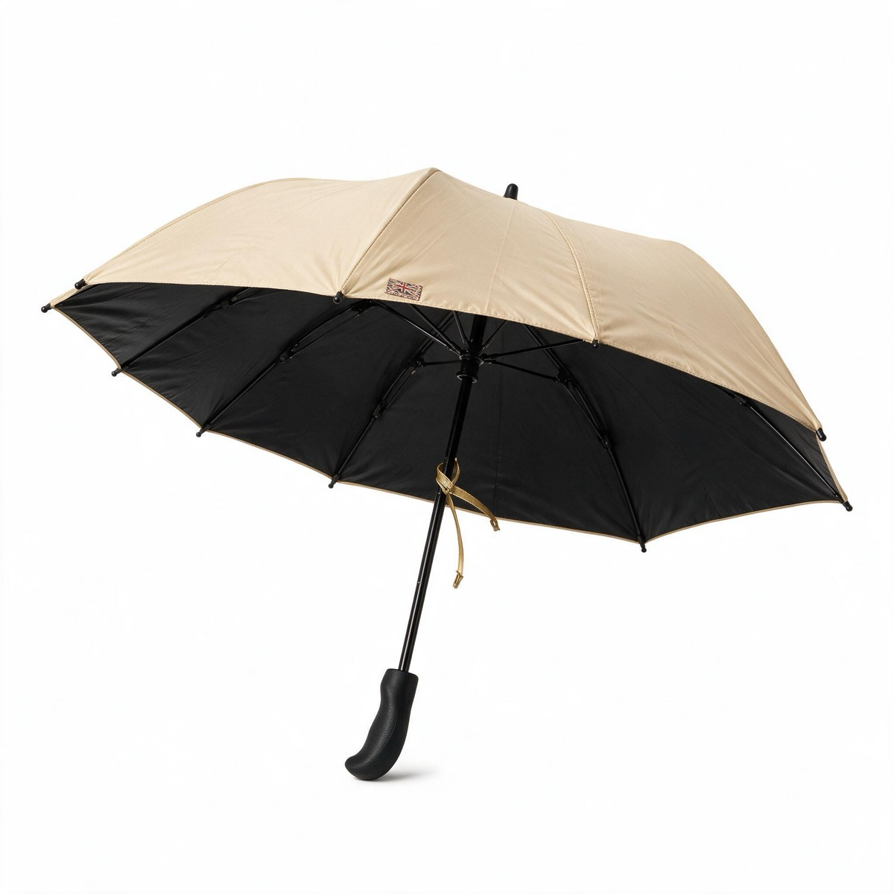

01
商品を選ぶ
サンプル商品から選ぶか、お手元の商品写真をそのままお使いください。必要なのは 1 枚だけです。
商品名は生成の手がかりとして使います。空欄のままでも生成できます。
02
AI が商品を読み取る
写真だけを見て、何の商品かを言語モデルが判定します。商品名・カテゴリー・色展開・想定売価・説明文まで書き起こし、 この結果が次の撮影プロンプトの土台になります。

未実行
01 で商品を選んだ時点で、読み取りは自動ではじまります。 結果は商品名・価格・説明文として出品情報に入り、そのまま 03 の 5 枚それぞれの場面になります。
03
撮影スタイル ／ 5 カット同時
商品ページに要る 5 種類のカットを、5 本の API を同時に投げて一度に撮ります。
左から右へ、劇的さが上がっていきます。場面が派手なほど商品は小さく・遠くなる設計です （生成が崩れる余地を残さないため）。上の作例はすべて、01 の折りたたみ傘 1 枚から生成したものです。
いま苦手なもの：文字情報の多いパッケージ、透明なガラス、鏡面の複雑な映り込み。 原図の文字が長い場合、02 以降で読めなくなることがあります。この 3 つは今日の時点では正直に不得手です。